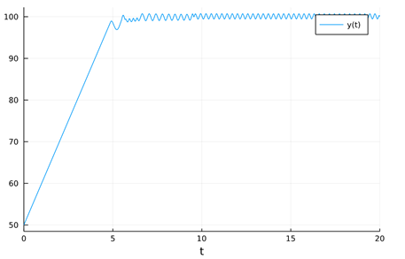
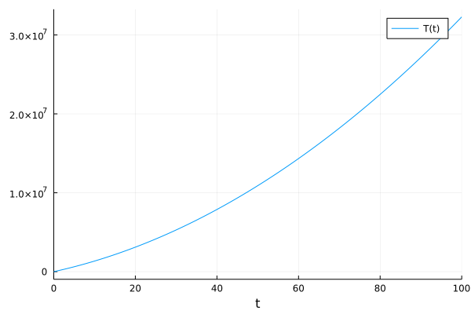

ModelingToolkit调用外部函数
Contents：建模、MTK、外部函数
Contributor: YJY
Email:522432938@qq.com
如有错误，请批评指正。
提出问题
在前面的ModelingToolkit建模方法中提到，符号系统是MTK的基石。那么，如果想加入一个外部函数，应该怎么解决？例如方程：
\[f(x,y) + x + y = 1\]
解决方案
把函数的调用符号化——@register，一切问题就解决了！
也就是说，把函数名称放入符号系统中去。和定义符号变量类型，对相关函数进行声明，声明该函数纳入符号系统，即可完成操作。
实例
考虑一个简单系统：
\[\frac{dy}{dt} = u(y) \\ u(y)= \left\{\begin{aligned} 10, &~~ y<10 \\ -10, &~~ y \geq 100 \end{aligned}\right. \]
这里函数u在编程时，很显然需要用if-else语句来描述。那么我们构造一个外部函数，这个外部函数为u，包含if-else的判断。(也可以用Ifelse包，包含了符号化的判断函数)
通过MTK构建：
using ModelingToolkit,DifferentialEquations
@variables t y(t)
D = Differential(t)
function u(y)
if y > 100.0
return -10.0
else
return 10.0
end
end
@register u(y)
eqs = [
D(y) ~ u(y)
]
@named sys = ODESystem(eqs)可以看到得到的方程中，u被视为函数，它的参数为y(t)。

求解问题：
sys = structural_simplify(sys)
u0=[y => 50.0]
tspan = (0.0,20.0)
prob = ODEProblem(sys,u0,tspan,[])
sol = solve(prob)
using Plots
plot(sol)
可以看到成功求解，并且y在100附近波动。这是我们期望的结果。
实例——CoolProp
CoolProp一个开源的调用物性包，通过几行代码就可以很容易的调用流体的物性。如何在符号系统中使用Coolprop函数调用物性呢？同样，也是使用外部函数，在外部函数中封装物性查询，将函数符号化即可。
测试问题：在1MPa下，求温度从300K-400K的水蒸气焓值累加和。（虽然这样做很没有意义，但是这是一种测试外部函数的有效并且简单的方法）
using ModelingToolkit,CoolProp,DifferentialEquations
@variables t T(t)
D = Differential(t)
function u(t)
PropsSI("H","P",1.0E6,"T",t,"Water")
end
@register u(t)
eqs = [
D(T) ~ u(t+300.0)
]
@named sys = ODESystem(eqs)
sys = structural_simplify(sys)
u0=[
T => 0.0
]
tspan = (0.0,100.0)
prob = ODEProblem(sys,u0,tspan,[])
sol = solve(prob)
using Plots
plot(sol)程序可以运行并且得到了结果，

MTK符号运算系统加上外部调用函数符号化，基本上可以解决各类仿真问题。
个人观点：
从仿真层面来说，MTK具有了作为一个仿真引擎的所有功能。
从程序开发层面来说，MTK具备搭建一个巨型系统的潜力。